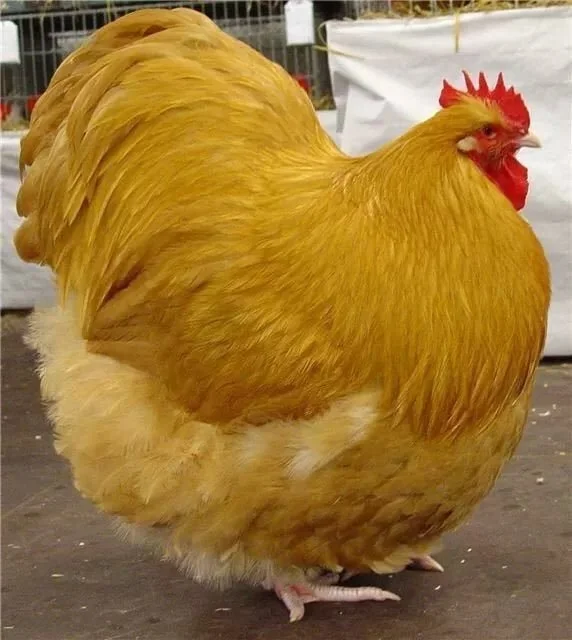

Chicken Recipe

Description
Big fluffly cluck.
This is a thicc chiccen. Tasty, chewy, and quite lively.
Ingredients
Steps
- harvest eggs.
- put chicken in oven
- wait 10 minutes
- chicken should be quiet by now. wait another 170 minutes
- serve with eggs
Home